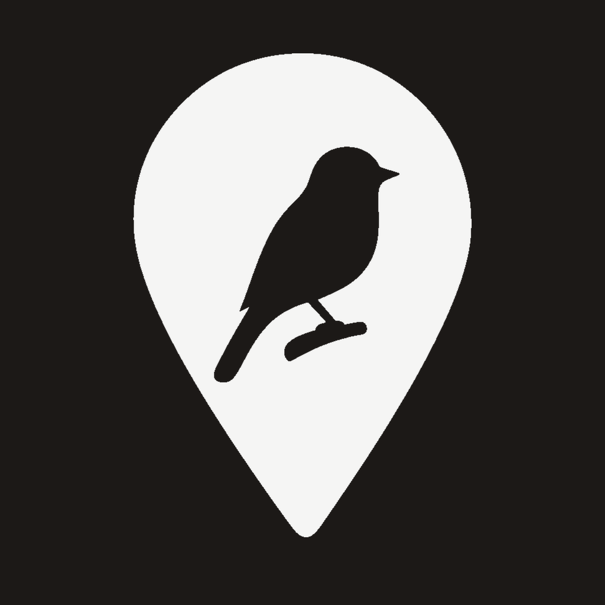
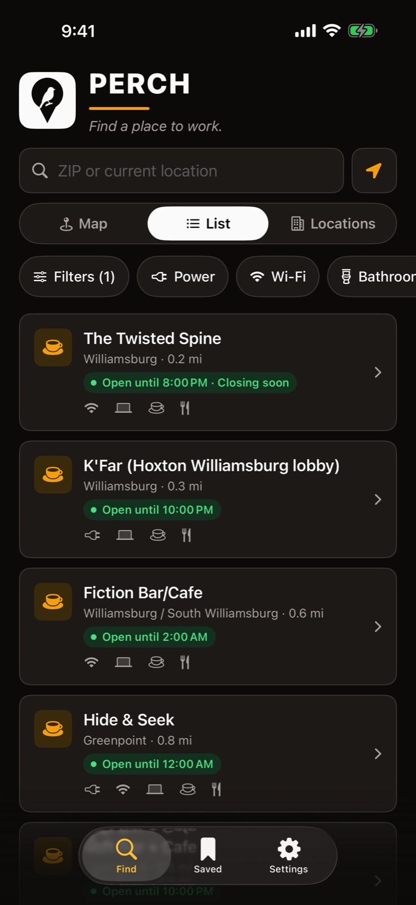
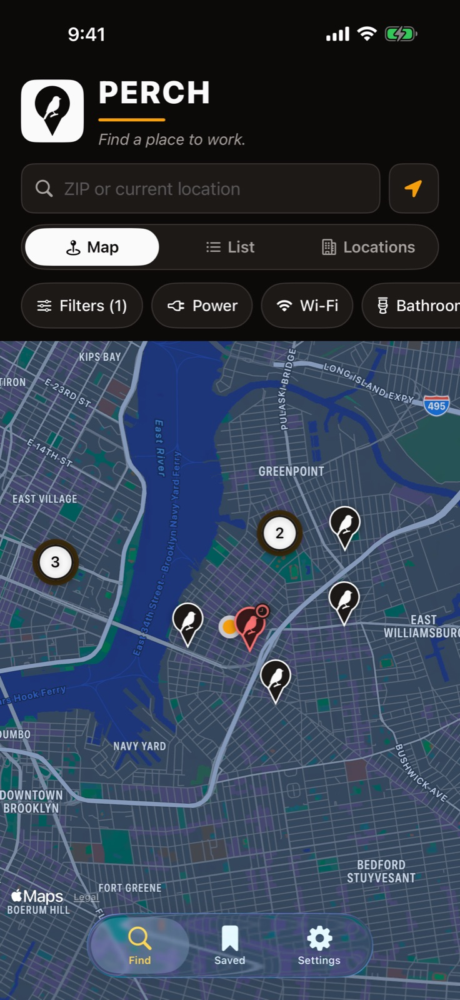
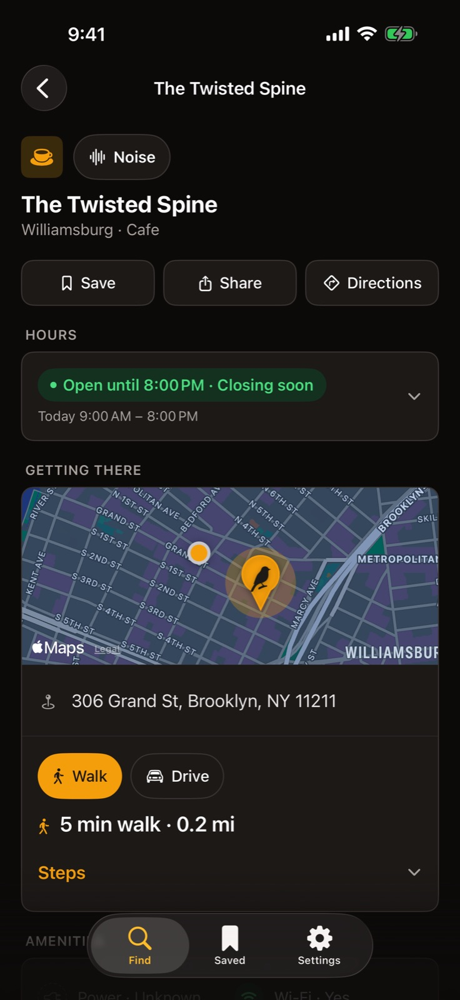
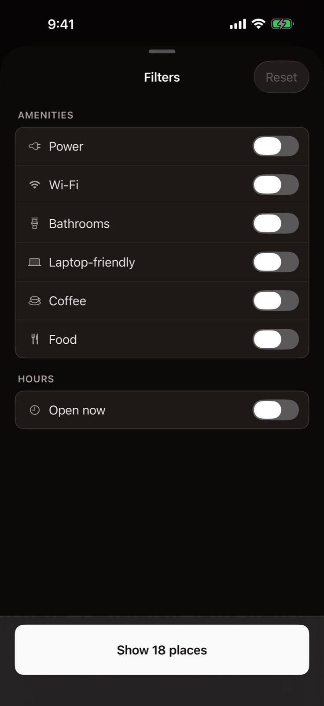
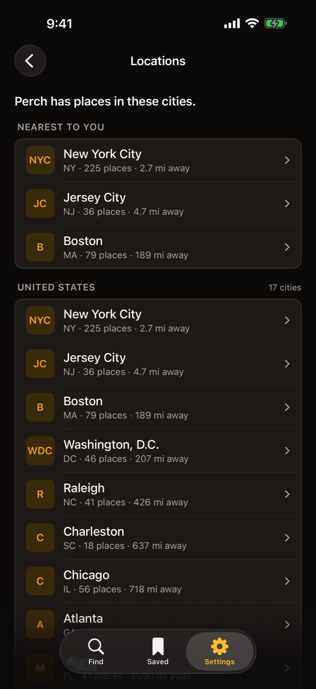

Perch
For iPhone and iPad, iOS 17 or later.
Where can I sit down and work near here?
Perch lists cafés where a laptop is welcome, sorted by distance from you. Each place says whether it is open now, when it closes, and whether it has wifi, power and bathrooms.



What it does
Find a place, check it, save it.
Find
Places near you, as a list or on a map. Search by ZIP code if you would rather not share your location.
Filters
Power, wifi, bathrooms, laptop friendly, coffee, food, and open now. Turn on only what you need.
Place details
Hours for every day of the week in the city's own time zone, walking or driving time, directions in Apple Maps, and the phone number and website.
Saved
Places you save stay on your device. If one leaves the catalog, it stays in your list, marked "No longer listed."
Filters
Unselected means it doesn't matter.
Turning a filter on shows only the places that have it. Leaving it off never hides a place. The button at the bottom says how many places are left before you close the sheet.
Set the filters you always want in Settings, and Find opens with them on.

Cities
1,382 places in 25 cities.
Perch covers some cities, not all of them. When there is nothing near you, Find says so, and the Locations list shows every city Perch covers, grouped by state and country, with how many places each one has.
New York City · Boston · Washington, D.C. · Atlanta · Miami · Raleigh · Chicago · Austin · Denver · Seattle · Portland · San Francisco · San Jose · Los Angeles · San Diego · Toronto · Vancouver · London · Amsterdam · Berlin · Tel Aviv · Bengaluru · Singapore · Tokyo · Sydney
Once the catalog has loaded, Perch works without a connection.

Privacy
No accounts. No ads. No tracking.
Nothing is collected
Perch has no analytics, no advertising and no crash reporting. Its App Store privacy label is Data Not Collected.
Location stays with you
Asked for only while you use the app, used to sort places by distance, and never sent to Perch.
Saved places stay on the device
They are not synced and not sent anywhere. Delete the app and they go with it.
Hours and amenities change without notice. Call ahead before a trip that matters. If a place is wrong, tap Send a catalog correction in Settings, or write to support+perch@getmakingthings.com.